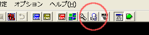

【1】 使用するウディタのバージョンは [2.x系] です まずはコモンイベントの一覧を開きましょう。 右の円にあるを左クリック。
{kind=link}

【目標】
戦闘開始直後、敵全滅〜戦闘終了時の間
ターンの開始時、ターンの終了時
上記のタイミングにイベントを発生させる
【1】 使用するウディタのバージョンは [2.x系] です まずはコモンイベントの一覧を開きましょう。 右の円にある |
 |
【2】 コモンイベントエディタが開いたら ウィンドウの左側にある、コモンイベント一覧の中から 203:○[変更可]戦闘開始時処理 を探します。 かなり下の方にあるので横のバーを一気に下げてしまっていいでしょう。 今回使用するのは 203 〜 206 の４つのコモンイベントです。 |
|
【3】 戦闘開始時にメッセージを表示させてみましょう。 コモンイベント一覧から 203:○[変更可]戦闘開始時処理 を選択。 イベントコマンドから文章の表示を選択。 文章の内容はてきとうに 戦闘開始時処理です とでも入力しておきましょう。 Ctrl+S か 更新ボタンを押し 保存するのを忘れずに。 |
|
【4】 それでは戦闘を行ってどうなったか確認してみましょう。 ◆バトルを発生させたいを参考にして てきとうな相手との戦闘を発生させてみてください。 敵が全て表示されたあとに メッセージが表示されましたか？ されていれば成功です。 >>> メッセージが表示されない場合の可能性。 <<< １、203:○[変更可]戦闘開始時処理 以外のコモンを改造している。 ２、何らかの理由で 203:○[変更可]戦闘開始時処理 が読み込まれていない。 >> コモン 188:X◆戦闘処理 を開き >> 43行目で ○[変更可]戦闘開始時処理 が呼び出されているか確認する。 |
【5】 204:○[変更可]1ﾀｰﾝ開始時処理 <188:X◆戦闘処理 71行目> 205:○[変更可]1ﾀｰﾝ終了時処理 <188:X◆戦闘処理 118行目> 206:○[変更可]戦闘終了後処理 <188:X◆戦闘処理 181行目> 等も同様に [3] を設定してみて、どのタイミングで呼び出されるか テストプレイでしっかり確認しておきましょう。 これで戦闘中のある程度決まったタイミングに イベントを発生させることができるようになりました。 おつかれさまです。 |
＜執筆者：きじこ＞
{kind=link}
{kind=link}
{kind=link}